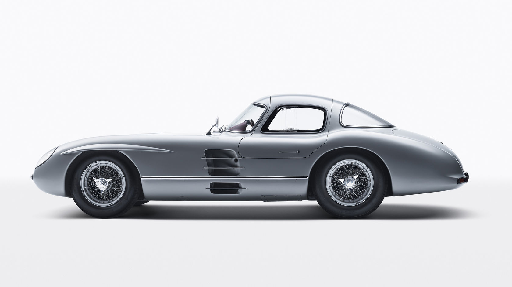

Dieses Auto wurde vom Auto-Hersteller Mercedes-Benz 1955 veröffentlicht.
Es wurden nur zwei Exemplare gefertigt und es ist das teuerste jemals verkaufte Auto, da vor Kurzem eines der Exemplare für einen erstaunlichen Preis von 135 Millionen Euro an einen privaten Sammler versteigert wurde.
